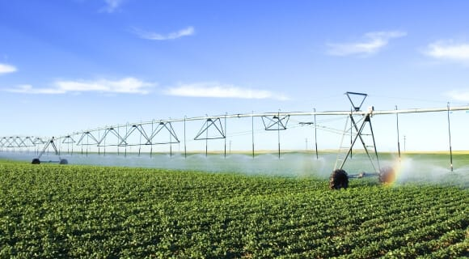

Cultivos alimentarios. Para necesidades
humanas como, por ejemplo: trigo, maíz, legumbres, arroz,
patatas o tomates.
Cultivos textiles. Para fibras usadas en ropa, sábanas,
industria y productos del hogar (cáñamo, algodón, lino,
bambú).
Cultivos oleaginosos. Para la producción de aceites
industriales (colza) o comestibles (girasol, olivas).
Cultivos ornamentales. Para la decoración del hogar y diseño
de paisajes (jardín, macetas, arbustos).
Cultivos industriales. Para manufacturación industrial.